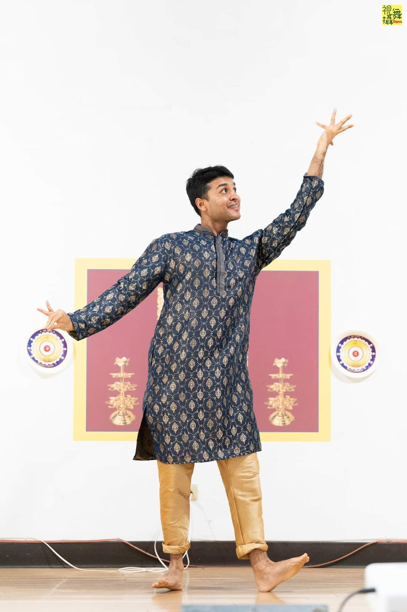
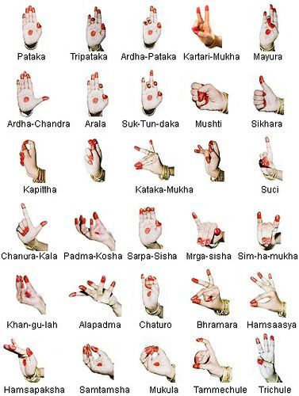

Indian Classical Dance World
Bharatnatyam
About Bharatnatyam
History and Origins: Bharatnatyam is one of the oldest classical dance forms originating from the temples of Tamil Nadu in South India. With roots stretching back over 2,000 years, this art form was initially practiced by temple dancers known as "Devadasis," who used dance as a form of worship and storytelling. These performances were dedicated to the Hindu deities and depicted stories from ancient Indian epics, including the Ramayana and Mahabharata.
Cultural Significance: Historically, Bharatnatyam is deeply symbolic, blending spirituality, storytelling, and physical discipline. The name "Bharatnatyam" is thought to derive from three essential concepts: Bhava (expression), Raga (melody), and Tala (rhythm). These elements come together to make Bharatnatyam not just a dance form but a journey of emotions, energy, and devotion. Over the centuries, it evolved from temple rituals to the stage, gaining worldwide recognition and respect as a vital part of India's cultural heritage.
Why Learn Bharatnatyam? Learning Bharatnatyam offers several benefits beyond mastering dance. Physically, it builds stamina, strength, and flexibility, while mentally, it enhances focus, discipline, and emotional expression. Each movement, gesture, and expression in Bharatnatyam is purposefully designed, making it a holistic practice that fosters both inner and outer growth. Additionally, Bharatnatyam connects individuals to a rich cultural tradition, helping them explore Indian mythology, philosophy, and history through the power of dance.
By learning Bharatnatyam, students not only embrace a beautiful art form but also a legacy that encourages them to express their inner self, connect with tradition, and find joy and purpose in movement.
Explore the Mudras
In Bharatnatyam, mudras (hand gestures) are essential for storytelling and expressing emotions. Here are a few important mudras:
Pataka
The "Pataka" mudra represents a flag and is often used to depict the start of a journey, blessing, or as a symbol of strength.
Tripataka
"Tripataka" symbolizes a crown or a tree, often representing gods, arrows, or flames. It is used to add flair and meaning to performances.
Ardhapataka
The "Ardhapataka" mudra (half flag) suggests leaves, or parts of objects, and is used to depict elements of nature in dance.
Kartarimukha
"Kartarimukha" (scissors gesture) represents separation or opposition, such as the act of cutting, or showing distance between people or things.
Book One-to-One Classes
I offer flexible one-to-one classes tailored for different age groups, as well as event booking options. Below are the details:
| Class Type | Duration | Price (NTD) | Details |
|---|---|---|---|
| One-to-One Class for Children | 1 hour | 700 | 4 classes per month; time can be discussed in the first meeting |
| One-to-One Class for Adults | 1 hour | 650 | 4 classes per month; time can be discussed in the first meeting |
| Event Booking | 1 hour | 5000 | For booking, please contact us via email or WhatsApp |
Contact Us
Reach out for program bookings and class inquiries.
Email: apal707662@gmail.com
Phone: +886-0902417760